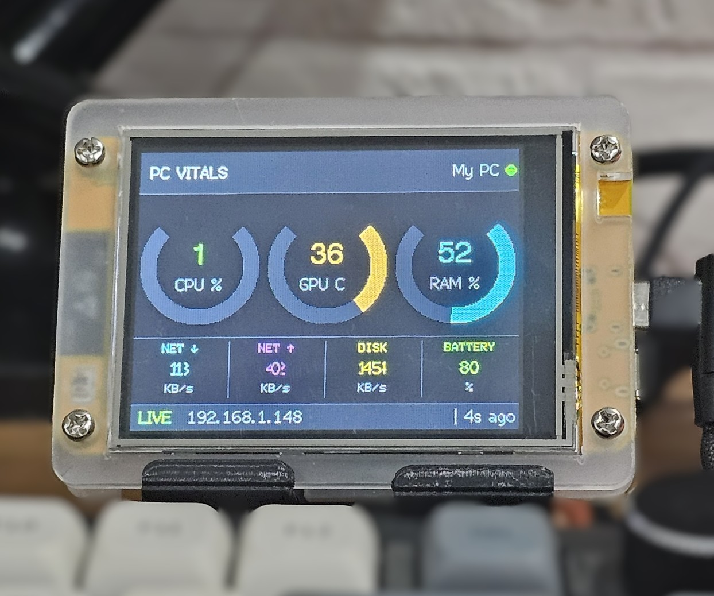
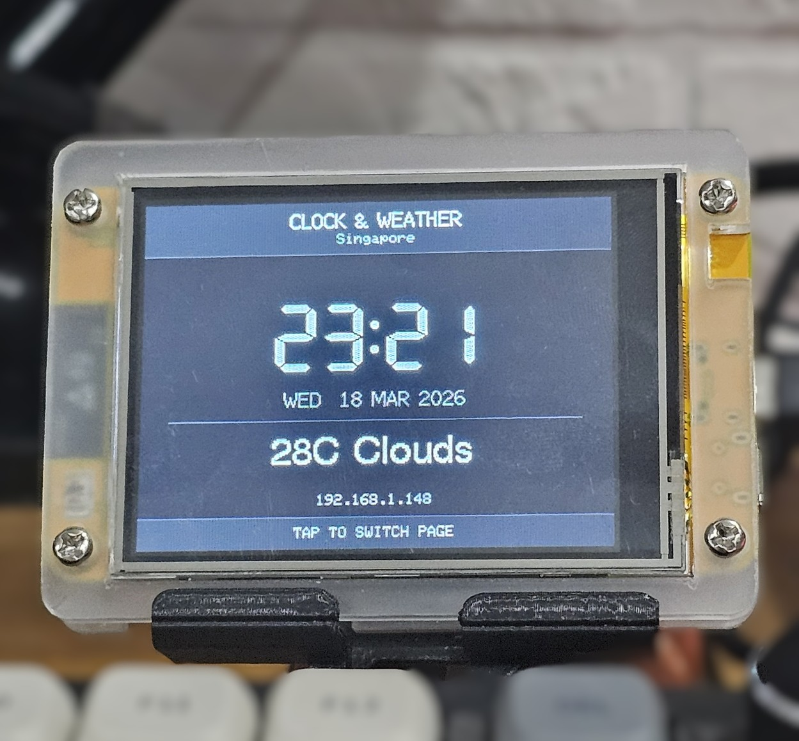

PCVitals
Your PC's vitals, always visible. A dedicated Wi-Fi connected display that shows live CPU, GPU temperature, RAM, network, disk, and battery — right on your desk, no alt-tab required.
What is PCVitals?
PCVitals is a compact, always-on display that shows your PC's live performance data without interrupting your workflow. Set it on your desk, connect it to your Wi-Fi, and let it monitor your system continuously — so you always know what your PC is doing without switching windows or opening task managers.
A lightweight companion app runs on your PC and streams system data to the display over your local network. No cloud, no subscriptions — just your stats, live on your desk.
Screen Modes
PC Vitals Screen
The main screen shows all key performance metrics at once — CPU usage, GPU temperature, RAM usage, network download and upload speeds, disk activity, and battery percentage. Colour-coded ring gauges make it instantly readable at a glance.
Clock & Weather Screen
Tap the screen to switch to a clean clock and weather view — showing the current time, date, temperature, and conditions. Tap again to switch back to the vitals screen at any time.
All Features
- Live CPU usage percentage
- GPU temperature in real time
- RAM usage percentage
- Network download and upload speeds (KB/s)
- Disk activity (KB/s)
- Battery percentage
- Clock & weather screen with tap-to-switch
- Live connection status and last-updated timestamp
- Wi-Fi connected — no USB data cable required
- Lightweight PC companion app — minimal system impact
- Plug-and-play setup via browser-based configuration
Specifications
| Display | 2.8" TFT Color · 240 × 320 px |
| Connectivity | Wi-Fi 2.4 GHz |
| Power | USB-C (5 V) |
| Data source | PC companion app (local network) |
| OS support | Windows only |
| GPU support | NVIDIA only |
| Screen modes | PC Vitals · Clock & Weather |
| Metrics | CPU, GPU temp, RAM, NET, Disk, Battery |
| Touchscreen | Yes — tap to switch screens |
| Dimensions | 85 × 60 × 15 mm |
| Weight | 66 g |
What does it display?

Clock & WeatherDownloads
Download the firmware and companion script to get PCVitals up and running.
pip install -r requirements.txt to install dependencies. Launch the script
with python pcvitals.py — it will start sending your PC's stats to PCVitals
automatically over your local network. An NVIDIA GPU is required for GPU temperature data.
Frequently Asked Questions
Can't find what you're looking for? Contact us.